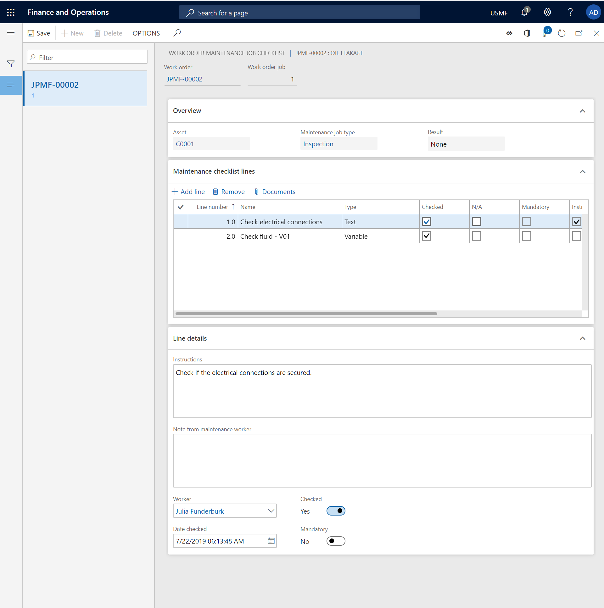

Maintenance checklists
Maintenance checklists are set up on maintenance job types. You fill in maintenance checklists as part of the process of completing a work order. For more information about how to set up maintenance checklists on maintenance job types on the Maintenance job type defaults page, see Maintenance job type categories and maintenance job types, maintenance job type variants, maintenance job trades, and maintenance checklists.
When you work with maintenance checklists on a work order, you can fill in the predefined maintenance checklists that are related to maintenance job types. You can also add more maintenance checklists.
Fill in a maintenance checklist
Click Asset management > Common > Work orders > All work orders or Active work orders.
Select the work order and then, on the Action Pane, on the Work order tab, in the Lines group, select Maintenance checklist.
The Work order maintenance job checklist shows the checklists for all work order jobs. If the work order jobs have different maintenance job types, the maintenance checklists might differ for each work order job. Select a work order job to work with the related maintenance checklist. Details of the selected maintenance checklist line are shown on the Line details FastTab.
Complete all the maintenance checklist lines, one at a time, in the order that they appear in. You complete a maintenance checklist line by filling in the fields on the Line details FastTab. The information that is required to complete a line can vary, depending on the line type. For example, on a line of the Text type, you add a note that explains the result of your check. On a line of the Measurement type, you enter the counter value that you read on the equipment, and you can also add a note as you require. A maintenance checklist line of the Header type is used as a heading to group the maintenance checklist lines that appear below it. You don't have to fill in a header. As for all other types of maintenance checklist lines, you can add a note to a line of the Header type.
If instructions are related to a maintenance checklist line, the Instructions check box is selected. Read instructions for the selected maintenance checklist line in the Instructions field on the Line details FastTab.
When you've completed a maintenance checklist line, select the Checked check box on that line to mark it as completed. To discard a maintenance checklist line because it isn't relevant to the work order job, select the N/A check box on the line. If the Mandatory check box is selected on a maintenance checklist line, you must select either the Checked check box or the N/A check box.
Note
You can only update maintenance checklist registrations if the work order is in an Active lifecycle state.
Add a maintenance checklist line
Maintenance checklists are created from the definition on the maintenance job type default and are transferred to a work order job. As you require, you can add maintenance checklist lines to a work order job. Maintenance checklist lines that you manually add get the Manual reference.
On the Work order maintenance job checklist page, select the work order job to add a maintenance checklist for.
On the Maintenance checklist lines FastTab, select a maintenance checklist line. Then, to insert a new line after the selected line, press the Down arrow key. The next number in the sequence is automatically entered in the Line number field. To insert a new line before the selected line, select Add line.
On the Name field, enter a name for the maintenance checklist line.
In the Type field, select a type for the maintenance checklist line. The Line details FastTab contains related fields for each maintenance checklist type.
- Text - Use this type to add a maintenance checklist line that has text that describes what must be done. For example, you can use this type if you want a worker to check or inspect something, but you aren't expecting a specific (measurable) result. After you select this type, on the Lines details FastTab, in the Instructions field, enter text that describes what must be done.
- Header - A maintenance checklist line of this type is used as a heading to group the maintenance checklist lines that appear below it. This type is useful if you have several maintenance checklist lines that can be divided into specific areas. After you select this type, in the Name field, enter a descriptive name.
- Template - This type isn't applicable when you manually add a maintenance checklist line on a work order job.
- Variable - Use this type to define a possible result in a range on the maintenance checklist line. For information about how to set up maintenance checklist variables, see Maintenance job type categories and maintenance job types, maintenance job type variants, maintenance job trades, and maintenance checklists. After you select this type, in the Name field, enter a name to describe the variable. On the Line details FastTab, in the Variable field, select the variable. In the Instructions field, enter text that describes what must be done.
- Measurement - Use this type to record a specific measurement on the maintenance checklist line. After you select this type, in the Name field, enter a name for the measurement. On the Line details FastTab, in the Counter and Unit fields, select appropriate values. In the Instructions field, enter text that describes what must be done.
When you've finished manually adding maintenance checklist lines, fill in the lines as described in the Fill in a maintenance checklist section above.
Note
On the Work order maintenance job checklist page, you can't delete maintenance checklist lines that have the Job type reference. You can delete only maintenance checklist lines that you or other maintenance workers have manually created, and that have the Manual reference.
The illustration below shows an example of a maintenance checklist.
